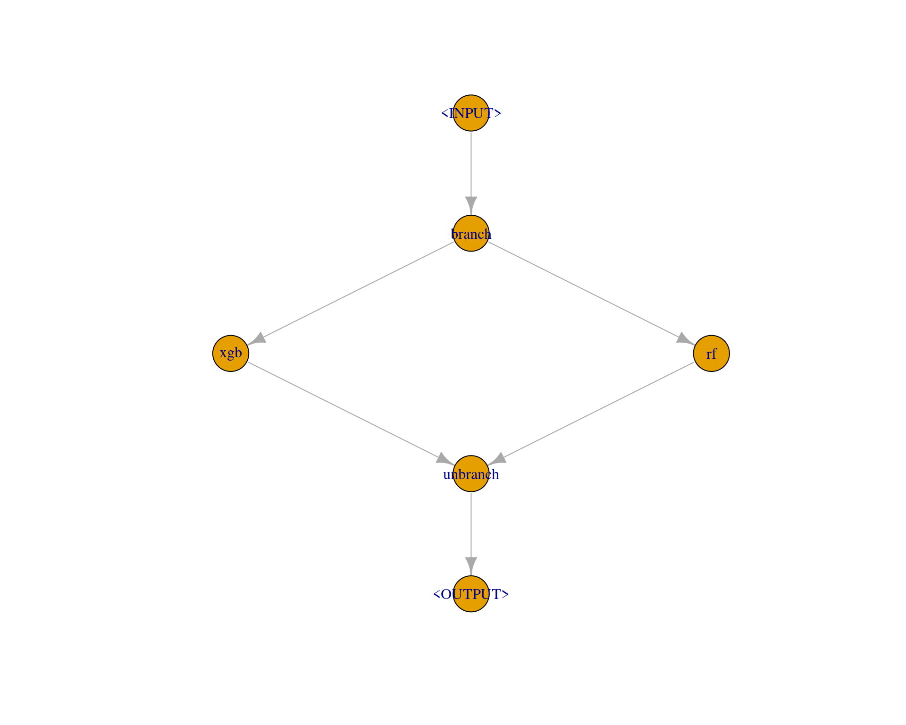

This use case shows how to tune over multiple learners for a single task.
This use case shows how to tune over multiple learners for a single task. You will learn the following:
This is an advanced use case. What should you know before:
AutoTunerAssume, you are given some ML task and what to compare a couple of learners, probably because you want to select the best of them at the end of the analysis. That’s a super standard scenario, it actually sounds so common that you might wonder: Why an (advanced) blog post about this? With pipelines? We will consider 2 cases: (a) Running the learners in their default, so without tuning, and (b) with tuning.
We load the mlr3verse package which pulls in the most important packages for this example. The mlr3learners package loads additional learners.
We initialize the random number generator with a fixed seed for reproducibility, and decrease the verbosity of the logger to keep the output clearly represented.
set.seed(7832)
lgr::get_logger("mlr3")$set_threshold("warn")
lgr::get_logger("bbotk")$set_threshold("warn")
Let’s define our learners.
learners = list(
lrn("classif.xgboost", id = "xgb", eval_metric = "logloss"),
lrn("classif.ranger", id = "rf")
)
learners_ids = sapply(learners, function(x) x$id)
task = tsk("sonar") # some random data for this demo
inner_cv2 = rsmp("cv", folds = 2) # inner loop for nested CV
outer_cv5 = rsmp("cv", folds = 5) # outer loop for nested CV
Assume we don’t want to perform tuning and or with running all learner in their respective defaults. Simply run benchmark on the learners and the tasks. That tabulates our results nicely and shows us what works best.
grid = benchmark_grid(task, learners, outer_cv5)
bmr = benchmark(grid)
bmr$aggregate(measures = msr("classif.ce"))
nr resample_result task_id learner_id resampling_id iters classif.ce
1: 1 <ResampleResult[22]> sonar xgb cv 5 0.2736353
2: 2 <ResampleResult[22]> sonar rf cv 5 0.1973287Ok, why would we ever want to change the simple approach above - and use pipelines / tuning for this? Three reasons:
benchmark() is actually statistically flawed, insofar if we report the error of the numerically best method from the benchmark table as its estimated future performance. If we do that we have “optimized on the CV” (we basically ran a grid search over our learners!) and we know that this is will produce optimistically biased results. NB: This is a somewhat ridiculous criticism if we are going over only a handful of options, and the bias will be very small. But it will be noticeable if we do this over hundreds of learners, so it is important to understand the underlying problem. This is a somewhat subtle point, and this gallery post is more about technical hints for mlr3, so we will stop this discussion here.The pipeline just has a single purpose in this example: It should allow us to switch between different learners, depending on a hyperparameter. The pipe consists of three elements:
branch pipes incoming data to one of the following elements, on different data channels. We can name these channel on construction with options.gunion())unbranch combines the forked paths at the end.graph =
po("branch", options = learners_ids) %>>%
gunion(lapply(learners, po)) %>>%
po("unbranch")
graph$plot()

The pipeline has now quite a lot of available hyperparameters. It includes all hyperparameters from all contained learners. But as we don’t tune them here (yet), we don’t care (yet). But the first hyperparameter is special. branch.selection controls over which (named) branching channel our data flows.
graph$param_set$ids()
[1] "branch.selection" "xgb.alpha" "xgb.approxcontrib"
[4] "xgb.base_score" "xgb.booster" "xgb.callbacks"
[7] "xgb.colsample_bylevel" "xgb.colsample_bynode" "xgb.colsample_bytree"
[10] "xgb.disable_default_eval_metric" "xgb.early_stopping_rounds" "xgb.eta"
[13] "xgb.eval_metric" "xgb.feature_selector" "xgb.feval"
[16] "xgb.gamma" "xgb.grow_policy" "xgb.interaction_constraints"
[19] "xgb.iterationrange" "xgb.lambda" "xgb.lambda_bias"
[22] "xgb.max_bin" "xgb.max_delta_step" "xgb.max_depth"
[25] "xgb.max_leaves" "xgb.maximize" "xgb.min_child_weight"
[28] "xgb.missing" "xgb.monotone_constraints" "xgb.normalize_type"
[31] "xgb.nrounds" "xgb.nthread" "xgb.ntreelimit"
[34] "xgb.num_parallel_tree" "xgb.objective" "xgb.one_drop"
[37] "xgb.outputmargin" "xgb.predcontrib" "xgb.predictor"
[40] "xgb.predinteraction" "xgb.predleaf" "xgb.print_every_n"
[43] "xgb.process_type" "xgb.rate_drop" "xgb.refresh_leaf"
[46] "xgb.reshape" "xgb.seed_per_iteration" "xgb.sampling_method"
[49] "xgb.sample_type" "xgb.save_name" "xgb.save_period"
[52] "xgb.scale_pos_weight" "xgb.sketch_eps" "xgb.skip_drop"
[55] "xgb.single_precision_histogram" "xgb.strict_shape" "xgb.subsample"
[58] "xgb.top_k" "xgb.training" "xgb.tree_method"
[61] "xgb.tweedie_variance_power" "xgb.updater" "xgb.verbose"
[64] "xgb.watchlist" "xgb.xgb_model" "rf.alpha"
[67] "rf.always.split.variables" "rf.class.weights" "rf.holdout"
[70] "rf.importance" "rf.keep.inbag" "rf.max.depth"
[73] "rf.min.node.size" "rf.min.prop" "rf.minprop"
[76] "rf.mtry" "rf.mtry.ratio" "rf.num.random.splits"
[79] "rf.num.threads" "rf.num.trees" "rf.oob.error"
[82] "rf.regularization.factor" "rf.regularization.usedepth" "rf.replace"
[85] "rf.respect.unordered.factors" "rf.sample.fraction" "rf.save.memory"
[88] "rf.scale.permutation.importance" "rf.se.method" "rf.seed"
[91] "rf.split.select.weights" "rf.splitrule" "rf.verbose"
[94] "rf.write.forest" graph$param_set$params$branch.selection
id class lower upper levels default
1: branch.selection ParamFct NA NA xgb,rf <NoDefault[3]>We can now tune over this pipeline, and probably running grid search seems a good idea to “touch” every available learner. NB: We have now written down in (much more complicated code) what we did before with benchmark.
graph_learner = as_learner(graph)
graph_learner$id = "g"
graph_learner$param_set$values$branch.selection = to_tune(levels = c("rf", "xgb"))
instance = tune(
method = "grid_search",
task = task,
learner = graph_learner,
resampling = inner_cv2,
measure = msr("classif.ce"))
as.data.table(instance$archive)
| branch.selection | classif.ce | x_domain_branch.selection | runtime_learners | timestamp | batch_nr |
|---|---|---|---|---|---|
| rf | 0.1778846 | rf | 0.304 | 2022-02-20 19:48:07 | 1 |
| xgb | 0.3269231 | xgb | 0.165 | 2022-02-20 19:48:08 | 2 |
But: Via this approach we can now get unbiased performance results via nested resampling and using the AutoTuner (which would make much more sense if we would select from 100 models and not 2).
at = auto_tuner(
method = "grid_search",
learner = graph_learner,
resampling = inner_cv2,
measure = msr("classif.ce"),
)
rr = resample(task, at, outer_cv5, store_models = TRUE)
# access inner tuning result
extract_inner_tuning_results(rr)
| iteration | branch.selection | classif.ce | task_id | learner_id | resampling_id |
|---|---|---|---|---|---|
| 1 | rf | 0.2349398 | sonar | g.tuned | cv |
| 2 | rf | 0.1626506 | sonar | g.tuned | cv |
| 3 | rf | 0.3012048 | sonar | g.tuned | cv |
| 4 | rf | 0.2813396 | sonar | g.tuned | cv |
| 5 | rf | 0.2932444 | sonar | g.tuned | cv |
# access inner tuning archives
extract_inner_tuning_archives(rr)
| iteration | branch.selection | classif.ce | x_domain_branch.selection | runtime_learners | timestamp | batch_nr | task_id | learner_id | resampling_id |
|---|---|---|---|---|---|---|---|---|---|
| 1 | rf | 0.2349398 | rf | 0.408 | 2022-02-18 07:01:46 | 1 | sonar | g.tuned | cv |
| 1 | xgb | 0.2469880 | xgb | 0.282 | 2022-02-18 07:01:47 | 2 | sonar | g.tuned | cv |
| 2 | rf | 0.1626506 | rf | 0.399 | 2022-02-18 07:01:46 | 1 | sonar | g.tuned | cv |
| 2 | xgb | 0.2530120 | xgb | 0.272 | 2022-02-18 07:01:46 | 2 | sonar | g.tuned | cv |
| 3 | xgb | 0.3795181 | xgb | 0.239 | 2022-02-18 07:01:45 | 1 | sonar | g.tuned | cv |
| 3 | rf | 0.3012048 | rf | 0.310 | 2022-02-18 07:01:46 | 2 | sonar | g.tuned | cv |
| 4 | xgb | 0.3714859 | xgb | 0.250 | 2022-02-18 07:01:46 | 1 | sonar | g.tuned | cv |
| 4 | rf | 0.2813396 | rf | 0.327 | 2022-02-18 07:01:46 | 2 | sonar | g.tuned | cv |
| 5 | xgb | 0.3353414 | xgb | 0.305 | 2022-02-18 07:01:45 | 1 | sonar | g.tuned | cv |
| 5 | rf | 0.2932444 | rf | 0.309 | 2022-02-18 07:01:46 | 2 | sonar | g.tuned | cv |
Now let’s select from our given set of models and tune their hyperparameters. One way to do this is to define a search space for each individual learner, wrap them all with the AutoTuner, then call benchmark() on them. As this is pretty standard, we will skip this here, and show an even neater option, where you can tune over models and hyperparameters in one go. If you have quite a large space of potential learners and combine this with an efficient tuning algorithm, this can save quite some time in tuning as you can learn during optimization which options work best and focus on them. NB: Many AutoML systems work in a very similar way.
Remember, that the pipeline contains a joint set of all contained hyperparameters. Prefixed with the respective PipeOp ID, to make names unique.
as.data.table(graph$param_set)
| id | class | lower | upper | nlevels |
|---|---|---|---|---|
| branch.selection | ParamFct | NA | NA | 2 |
| xgb.alpha | ParamDbl | 0 | Inf | Inf |
| xgb.approxcontrib | ParamLgl | NA | NA | 2 |
| xgb.base_score | ParamDbl | -Inf | Inf | Inf |
| xgb.booster | ParamFct | NA | NA | 3 |
| xgb.callbacks | ParamUty | NA | NA | Inf |
| xgb.colsample_bylevel | ParamDbl | 0 | 1 | Inf |
| xgb.colsample_bynode | ParamDbl | 0 | 1 | Inf |
| xgb.colsample_bytree | ParamDbl | 0 | 1 | Inf |
| xgb.disable_default_eval_metric | ParamLgl | NA | NA | 2 |
| xgb.early_stopping_rounds | ParamInt | 1 | Inf | Inf |
| xgb.eta | ParamDbl | 0 | 1 | Inf |
| xgb.eval_metric | ParamUty | NA | NA | Inf |
| xgb.feature_selector | ParamFct | NA | NA | 5 |
| xgb.feval | ParamUty | NA | NA | Inf |
| xgb.gamma | ParamDbl | 0 | Inf | Inf |
| xgb.grow_policy | ParamFct | NA | NA | 2 |
| xgb.interaction_constraints | ParamUty | NA | NA | Inf |
| xgb.iterationrange | ParamUty | NA | NA | Inf |
| xgb.lambda | ParamDbl | 0 | Inf | Inf |
| xgb.lambda_bias | ParamDbl | 0 | Inf | Inf |
| xgb.max_bin | ParamInt | 2 | Inf | Inf |
| xgb.max_delta_step | ParamDbl | 0 | Inf | Inf |
| xgb.max_depth | ParamInt | 0 | Inf | Inf |
| xgb.max_leaves | ParamInt | 0 | Inf | Inf |
| xgb.maximize | ParamLgl | NA | NA | 2 |
| xgb.min_child_weight | ParamDbl | 0 | Inf | Inf |
| xgb.missing | ParamDbl | -Inf | Inf | Inf |
| xgb.monotone_constraints | ParamUty | NA | NA | Inf |
| xgb.normalize_type | ParamFct | NA | NA | 2 |
| xgb.nrounds | ParamInt | 1 | Inf | Inf |
| xgb.nthread | ParamInt | 1 | Inf | Inf |
| xgb.ntreelimit | ParamInt | 1 | Inf | Inf |
| xgb.num_parallel_tree | ParamInt | 1 | Inf | Inf |
| xgb.objective | ParamUty | NA | NA | Inf |
| xgb.one_drop | ParamLgl | NA | NA | 2 |
| xgb.outputmargin | ParamLgl | NA | NA | 2 |
| xgb.predcontrib | ParamLgl | NA | NA | 2 |
| xgb.predictor | ParamFct | NA | NA | 2 |
| xgb.predinteraction | ParamLgl | NA | NA | 2 |
| xgb.predleaf | ParamLgl | NA | NA | 2 |
| xgb.print_every_n | ParamInt | 1 | Inf | Inf |
| xgb.process_type | ParamFct | NA | NA | 2 |
| xgb.rate_drop | ParamDbl | 0 | 1 | Inf |
| xgb.refresh_leaf | ParamLgl | NA | NA | 2 |
| xgb.reshape | ParamLgl | NA | NA | 2 |
| xgb.seed_per_iteration | ParamLgl | NA | NA | 2 |
| xgb.sampling_method | ParamFct | NA | NA | 2 |
| xgb.sample_type | ParamFct | NA | NA | 2 |
| xgb.save_name | ParamUty | NA | NA | Inf |
| xgb.save_period | ParamInt | 0 | Inf | Inf |
| xgb.scale_pos_weight | ParamDbl | -Inf | Inf | Inf |
| xgb.sketch_eps | ParamDbl | 0 | 1 | Inf |
| xgb.skip_drop | ParamDbl | 0 | 1 | Inf |
| xgb.single_precision_histogram | ParamLgl | NA | NA | 2 |
| xgb.strict_shape | ParamLgl | NA | NA | 2 |
| xgb.subsample | ParamDbl | 0 | 1 | Inf |
| xgb.top_k | ParamInt | 0 | Inf | Inf |
| xgb.training | ParamLgl | NA | NA | 2 |
| xgb.tree_method | ParamFct | NA | NA | 5 |
| xgb.tweedie_variance_power | ParamDbl | 1 | 2 | Inf |
| xgb.updater | ParamUty | NA | NA | Inf |
| xgb.verbose | ParamInt | 0 | 2 | 3 |
| xgb.watchlist | ParamUty | NA | NA | Inf |
| xgb.xgb_model | ParamUty | NA | NA | Inf |
| rf.alpha | ParamDbl | -Inf | Inf | Inf |
| rf.always.split.variables | ParamUty | NA | NA | Inf |
| rf.class.weights | ParamUty | NA | NA | Inf |
| rf.holdout | ParamLgl | NA | NA | 2 |
| rf.importance | ParamFct | NA | NA | 4 |
| rf.keep.inbag | ParamLgl | NA | NA | 2 |
| rf.max.depth | ParamInt | 0 | Inf | Inf |
| rf.min.node.size | ParamInt | 1 | Inf | Inf |
| rf.min.prop | ParamDbl | -Inf | Inf | Inf |
| rf.minprop | ParamDbl | -Inf | Inf | Inf |
| rf.mtry | ParamInt | 1 | Inf | Inf |
| rf.mtry.ratio | ParamDbl | 0 | 1 | Inf |
| rf.num.random.splits | ParamInt | 1 | Inf | Inf |
| rf.num.threads | ParamInt | 1 | Inf | Inf |
| rf.num.trees | ParamInt | 1 | Inf | Inf |
| rf.oob.error | ParamLgl | NA | NA | 2 |
| rf.regularization.factor | ParamUty | NA | NA | Inf |
| rf.regularization.usedepth | ParamLgl | NA | NA | 2 |
| rf.replace | ParamLgl | NA | NA | 2 |
| rf.respect.unordered.factors | ParamFct | NA | NA | 3 |
| rf.sample.fraction | ParamDbl | 0 | 1 | Inf |
| rf.save.memory | ParamLgl | NA | NA | 2 |
| rf.scale.permutation.importance | ParamLgl | NA | NA | 2 |
| rf.se.method | ParamFct | NA | NA | 2 |
| rf.seed | ParamInt | -Inf | Inf | Inf |
| rf.split.select.weights | ParamUty | NA | NA | Inf |
| rf.splitrule | ParamFct | NA | NA | 2 |
| rf.verbose | ParamLgl | NA | NA | 2 |
| rf.write.forest | ParamLgl | NA | NA | 2 |
We decide to tune the mtry parameter of the random forest and the nrounds parameter of xgboost. Additionally, we tune branching parameter that selects our learner.
We also have to reflect the hierarchical order of the parameter sets (admittedly, this is somewhat inconvenient). We can only set the mtry value if the pipe is configured to use the random forest (ranger). The same applies for the xgboost parameter.
Very similar code as before, we just swap out the search space. And now use random search.
graph_learner = as_learner(graph)
graph_learner$id = "g"
instance = tune(
method = "random_search",
task = task,
learner = graph_learner,
resampling = inner_cv2,
measure = msr("classif.ce"),
search_space = search_space,
term_evals = 10
)
as.data.table(instance$archive)
| branch.selection | rf.mtry | xgb.nrounds | classif.ce | x_domain_branch.selection | x_domain_xgb.nrounds | x_domain_rf.mtry | runtime_learners | timestamp | batch_nr |
|---|---|---|---|---|---|---|---|---|---|
| xgb | NA | 292 | 0.1875000 | xgb | 292 | NA | 0.499 | 2022-02-18 07:01:52 | 1 |
| rf | 19 | NA | 0.2692308 | rf | NA | 19 | 0.449 | 2022-02-18 07:01:53 | 2 |
| rf | 5 | NA | 0.2307692 | rf | NA | 5 | 0.330 | 2022-02-18 07:01:54 | 3 |
| xgb | NA | 229 | 0.1875000 | xgb | 229 | NA | 0.457 | 2022-02-18 07:01:55 | 4 |
| xgb | NA | 301 | 0.1875000 | xgb | 301 | NA | 0.490 | 2022-02-18 07:01:55 | 5 |
| rf | 20 | NA | 0.2596154 | rf | NA | 20 | 0.702 | 2022-02-18 07:01:56 | 6 |
| rf | 8 | NA | 0.2355769 | rf | NA | 8 | 0.359 | 2022-02-18 07:01:57 | 7 |
| rf | 2 | NA | 0.2355769 | rf | NA | 2 | 0.310 | 2022-02-18 07:01:57 | 8 |
| rf | 5 | NA | 0.2500000 | rf | NA | 5 | 0.351 | 2022-02-18 07:01:58 | 9 |
| rf | 18 | NA | 0.2451923 | rf | NA | 18 | 0.463 | 2022-02-18 07:01:59 | 10 |
The following shows a quick way to visualize the tuning results.
Nested resampling, now really needed:
rr = tune_nested(
method = "grid_search",
task = task,
learner = graph_learner,
inner_resampling = inner_cv2,
outer_resampling = outer_cv5,
measure = msr("classif.ce"),
search_space = search_space,
term_evals = 10L)
# access inner tuning result
extract_inner_tuning_results(rr)
| iteration | branch.selection | rf.mtry | xgb.nrounds | classif.ce | learner_param_vals | x_domain | task_id | learner_id | resampling_id |
|---|---|---|---|---|---|---|---|---|---|
| 1 | rf | 5 | NA | 0.2108434 | rf , 1 , 1 , 0 , logloss, 1 , 5 | rf, 5 | sonar | g.tuned | cv |
| 2 | rf | 1 | NA | 0.1807229 | rf , 1 , 1 , 0 , logloss, 1 , 1 | rf, 1 | sonar | g.tuned | cv |
| 3 | rf | 1 | NA | 0.2289157 | rf , 1 , 1 , 0 , logloss, 1 , 1 | rf, 1 | sonar | g.tuned | cv |
| 4 | xgb | NA | 445 | 0.1915519 | xgb , 445 , 1 , 0 , logloss, 1 | xgb, 445 | sonar | g.tuned | cv |
| 5 | rf | 7 | NA | 0.1858147 | rf , 1 , 1 , 0 , logloss, 1 , 7 | rf, 7 | sonar | g.tuned | cv |